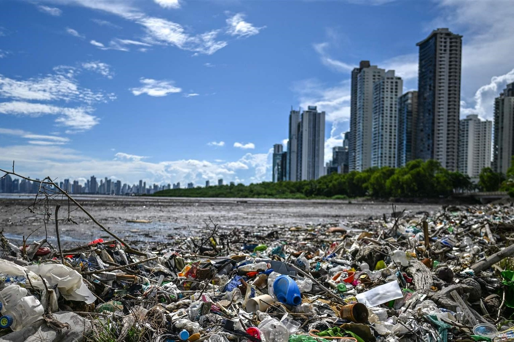

Pollution Control
Play related games
Comming soon ...
About Pollution Control
Pollution Control refers to reducing the damage caused by the harmful substances released in the environment. Pollution is caused by harmful chemicals, sewage, household waste, greenhouse gases from burning fossi fuels, and many other sources.Reducing waste, controlling emissions, treating harmful chemicals are a few ways of reducing pollution.
Types of Pollution
Controlling Pollution
Pollution can be controlled in the following manner: